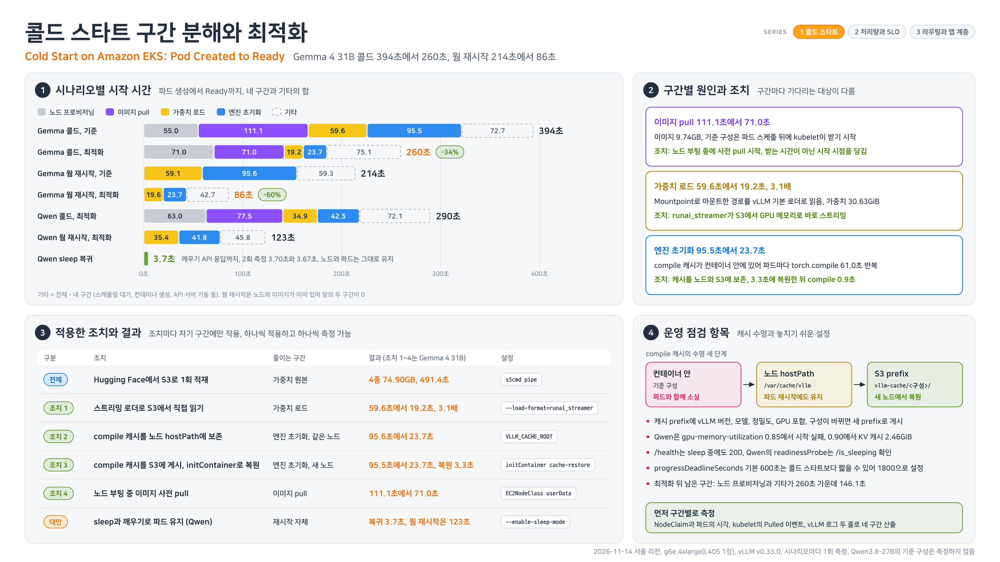
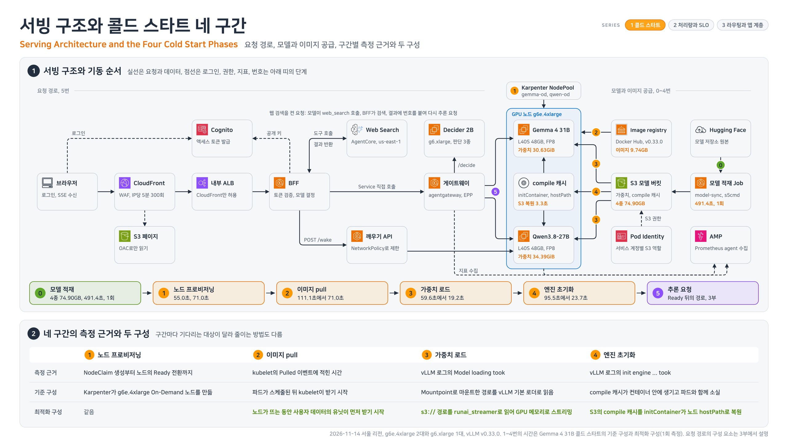
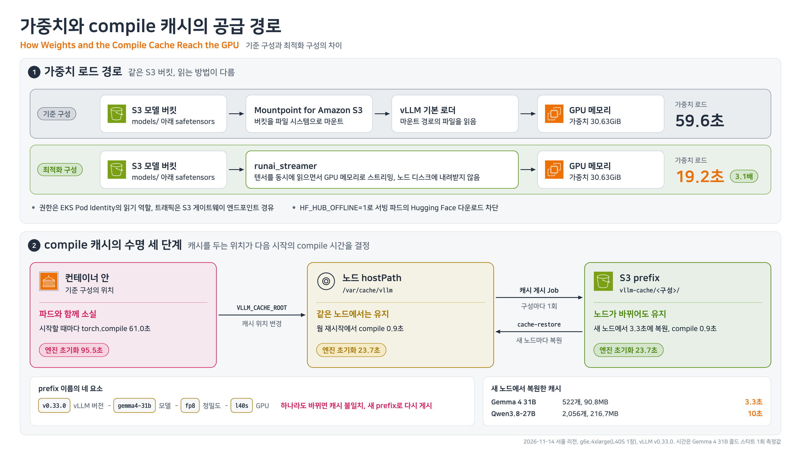
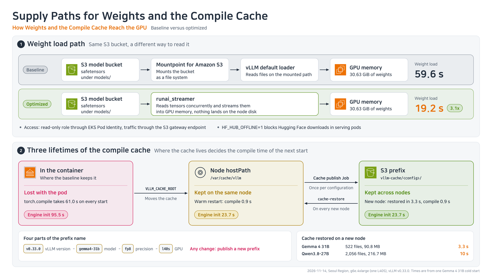

Amazon EKS에서 vLLM으로 두 모델 서빙하기 1부: 콜드 스타트 구간별 단축Serving two models with vLLM on Amazon EKS, Part 1: Cutting cold start phase by phase
GPU 노드에서 LLM 서빙 파드가 요청을 받기까지 걸리는 몇 분은 어디에 쓰이고 어디를 줄일 수 있을까요? Amazon EKS의 g6e.4xlarge에서 vLLM으로 Gemma 4 31B를 띄우는 시간을 네 구간으로 나눠 재 보니 이미지 pull, 가중치 로드, 엔진 초기화가 각각 다른 조치로 줄었습니다. 콜드 스타트는 394초에서 260초, 웜 재시작은 214초에서 86초가 됐고 노드 프로비저닝과 기타 구간은 그대로 남았습니다.Where do the minutes go before an LLM serving pod on a GPU node can take requests, and which of them can be cut? I split the start-up of Gemma 4 31B on vLLM, on a g6e.4xlarge in Amazon EKS, into four phases and found that image pull, weight load and engine initialization each shrank with a different action. The cold start went from 394 s to 260 s and the warm restart from 214 s to 86 s, while node provisioning and the remaining time stayed where they were.
- 전체 시간: Gemma 4 31B의 콜드 스타트는 394초에서 260초(34% 감소), 웜 재시작은 214초에서 86초(60% 감소)가 됐습니다. Qwen3.8-27B는 최적화 구성에서 290초와 123초였습니다.Total time: the Gemma 4 31B cold start went from 394 s to 260 s (34% less) and the warm restart from 214 s to 86 s (60% less). Qwen3.8-27B took 290 s and 123 s in the optimized configuration.
- 가중치 로드: Mountpoint for Amazon S3로 마운트한 경로를 기본 로더로 읽으면 59.6초,
runai_streamer로 S3에서 GPU 메모리로 스트리밍하면 19.2초였습니다.Weight load: 59.6 s when the default loader read a path mounted with Mountpoint for Amazon S3, and 19.2 s whenrunai_streamerstreamed from S3 into GPU memory. - 엔진 초기화: compile 캐시를 노드와 S3에 보존하자 95.5초에서 23.7초가 됐습니다.
torch.compile이 61.0초에서 0.9초로 줄었습니다.Engine initialization: 95.5 s to 23.7 s once the compile cache was kept on the node and in S3.torch.compiledropped from 61.0 s to 0.9 s. - 이미지 pull: 노드 부팅 중에 시작하는 사전 pull로 kubelet 기준 111.1초에서 71.0초가 됐습니다. 받는 시간은 그대로이고 받기 시작하는 시점이 앞당겨졌습니다.Image pull: 111.1 s to 71.0 s as seen by the kubelet, with a pre-pull that starts while the node boots. The download takes as long as before; it only starts earlier.
- 남은 구간: 노드 프로비저닝과 기타는 줄지 않아 최적화 구성 260초 가운데 146.1초를 차지합니다. 모든 값은 시나리오마다 한 번 잰 것입니다.What is left: node provisioning and the remaining time did not shrink and make up 146.1 s of the 260 s. Every value comes from one run per scenario.
394초 가운데 줄인 구간은 세 곳
GPU 노드에서 LLM 서빙 파드를 새로 띄우면 요청을 받기까지 몇 분이 걸립니다. 이 환경에서 Gemma 4 31B의 파드는 생성에서 Ready까지 394초가 걸렸습니다. 노드가 준비되면 9.7GB 컨테이너 이미지를 받고 30GiB가 넘는 가중치를 GPU 메모리에 올립니다. 그 뒤 엔진이 연산 그래프를 컴파일해야 파드가 Ready가 됩니다.
측정은 이 394초를 노드 프로비저닝, 이미지 pull, 가중치 로드, 엔진 초기화의 네 구간으로 나누는 데서 시작했습니다. 구간마다 기다리는 대상이 다르므로 줄이는 방법도 구간마다 따로 있을 것이라고 가정했습니다. 측정 결과는 이 가정과 맞았습니다. 이미지 pull, 가중치 로드, 엔진 초기화가 서로 다른 조치로 줄어 새 노드에서 시작하는 콜드 스타트(Cold start)는 260초가 됐습니다. 같은 노드에서 파드만 다시 띄우는 웜 재시작(Warm restart)은 214초에서 86초가 됐습니다.
대상은 Amazon Elastic Kubernetes Service(Amazon EKS)에서 vLLM으로 서빙하는 Gemma 4 31B와 Qwen3.8-27B입니다. 모든 값은 2026년 11월 14일 서울 리전(ap-northeast-2)에서 시나리오마다 한 번 잰 것이어서 반복했을 때의 편차는 담겨 있지 않습니다.
이 글은 "Amazon EKS에서 vLLM으로 두 모델 서빙하기" 시리즈의 1부입니다. 2부는 같은 환경의 처리량과 SLO(서비스 수준 목표)를, 3부는 게이트웨이와 모델 라우팅, 앱 계층을 다룹니다. Amazon EKS에서 GPU 워크로드를 운영하는 플랫폼 엔지니어를 대상으로 하며 Kubernetes와 LLM 서빙의 기본 개념을 알고 있다면 무리 없이 읽을 수 있습니다.
그림 1에 측정 결과와 구간별 조치를 한 장으로 모았습니다. 각 값을 잰 방법과 구성은 이어지는 절에서 차례로 설명합니다.

01
L40S 두 대와 vLLM v0.33.0으로 잰 환경
시리즈에서 다루는 구성
환경은 서울 리전의 Amazon EKS 1.37 클러스터 하나입니다. Gemma 4 31B와 Qwen3.8-27B가 각각 NVIDIA L40S(g6e.4xlarge) 한 장을 사용합니다. Strands Decider 2B는 요청을 어느 모델로 보낼지 판단을 돕는 모델이고 g6.xlarge 한 대에서 실행됩니다. GPU 노드 세 대는 모두 On-Demand이고 Karpenter가 만듭니다.
그림 2의 왼쪽은 요청이 지나는 경로이고 오른쪽은 모델과 이미지를 GPU 노드에 대는 쪽입니다. 아래쪽 띠의 번호는 기동 순서이고 이 글은 0번에서 4번까지를 다룹니다.

요청은 Amazon CloudFront와 내부 ALB(Application Load Balancer)를 지나 BFF(Backend for Frontend)에 도착합니다. BFF는 같은 클러스터의 파드이고 게이트웨이를 클러스터 안의 Service로 호출합니다. 게이트웨이는 요청을 모델에 맞는 vLLM 파드로 넘깁니다. 이 경로는 3부에서 다루고 이 글은 모델과 이미지가 GPU 노드에 올라가는 쪽을 다룹니다.
서빙 파드는 Hugging Face에서 가중치를 내려받지 않습니다. 적재 Job이 체크포인트를 Amazon Simple Storage Service(Amazon S3) 버킷에 한 번 올리고 서빙 파드는 그 버킷의 models/와 vllm-cache/만 읽습니다. 권한은 EKS Pod Identity로 주고 버킷까지의 트래픽은 VPC의 S3 게이트웨이 엔드포인트를 지납니다.
버전 조합
모든 구성 요소는 2026년 11월 14일 기준 최신 버전을 사용하되 서로의 지원 범위 안에서 맞췄습니다.
| 구성 요소 | 버전 | 맞춘 근거 |
|---|---|---|
| Amazon EKS | 1.37 | 서울 리전의 최신이자 기본 버전 |
| GPU 노드 AMI | EKS 최적화 AL2023 NVIDIA 1.37.1-20261107 (NVIDIA 드라이버 580.178.04) | amazon-eks-ami v20261107 릴리스 |
| Karpenter | v1.15.2 | 호환표에서 Kubernetes 1.37은 Karpenter 1.15 계열 |
| EKS Pod Identity Agent | v1.4.1-eksbuild.3 | Kubernetes 1.37 기준 애드온의 최신 버전 |
| NVIDIA device plugin | v0.20.1 | 정적 매니페스트를 사용 |
| vLLM | v0.33.0 (vllm/vllm-openai:v0.33.0, linux/amd64 9.74GB) | 이미지가 CUDA 13.0.2 기반이고 대응 드라이버 브랜치가 R580 |
| Mountpoint for Amazon S3 CSI 드라이버 | v2.9.2-eksbuild.1 | 기준 구성의 측정에만 사용 |
표 1. 이 글에서 다루는 구성 요소의 버전(2026년 11월 14일 확인)
vLLM 이미지와 GPU 드라이버의 조합은 따로 확인했습니다. EKS 사용 설명서에 따르면 CUDA 13 이상에는 NVIDIA 580 드라이버가 필요합니다. EKS 최적화 AL2023 NVIDIA AMI는 노드의 GPU에 맞는 드라이버를 첫 부팅 때 고릅니다. L40S 노드에는 580.178.04가 올라왔습니다.
g6e.4xlarge의 사양은 vCPU 16개, 메모리 128GiB, L40S 한 장, 인스턴스 스토어 600GB입니다. GPU 메모리는 제품 페이지 표기로 48GB이고 describe-instance-types의 값은 45,776MiB(44.7GiB)입니다. 조회 시점에 이 인스턴스는 서울 리전의 가용 영역 네 곳 가운데 ap-northeast-2a와 ap-northeast-2b에서만 제공됐습니다.
02
네 구간과 두 가지 구성
구간마다 기다리는 대상
파드 생성에서 Ready까지의 시간은 네 구간과 나머지(기타)로 나눕니다. 구간마다 기다리는 대상이 다르므로 줄이는 방법도 다릅니다.
기준 구성은 최적화를 적용하기 전의 구성입니다. 모델 버킷을 Mountpoint for Amazon S3로 마운트해 vLLM 기본 로더로 읽고 compile 캐시를 컨테이너 안에 둡니다. 노드는 이미지를 미리 받지 않습니다. 최적화 구성은 지금 서빙에 사용하는 구성입니다.
| 구간 | 기준 구성 | 최적화 구성 |
|---|---|---|
| 노드 프로비저닝 | Karpenter가 g6e.4xlarge On-Demand 노드를 만듦 | 같음 |
| 이미지 pull | 파드가 스케줄된 뒤 kubelet이 받기 시작 | 노드가 뜨는 동안 사용자 데이터의 유닛이 먼저 받기 시작 |
| 가중치 로드 | Mountpoint for Amazon S3로 마운트한 경로를 vLLM 기본 로더로 읽음 | s3:// 경로를 runai_streamer로 읽어 GPU 메모리로 스트리밍 |
| 엔진 초기화 | compile 캐시가 컨테이너 안에 생기고 파드와 함께 사라짐 | S3의 compile 캐시를 initContainer가 노드의 hostPath로 복원 |
표 2. 구간별로 본 기준 구성과 최적화 구성의 차이. 모델, vLLM 버전, 로더를 뺀 엔진 플래그는 두 구성이 같습니다
노드 프로비저닝은 두 구성이 같으므로 줄일 대상은 나머지 세 구간입니다. 이미지 pull은 노드 설정에서, 가중치 로드는 로더에서, 엔진 초기화는 캐시에서 줄입니다.
새 매장을 여는 일에 비유하면 이해하기 쉽습니다. 노드 프로비저닝은 빈 점포를 구하는 일이고 이미지 pull은 주방 설비를 들여놓는 일입니다. 가중치 로드는 식재료를 창고에서 주방으로 옮기는 일이고 엔진 초기화는 영업 전에 재료를 손질해 두는 준비입니다. 최적화 구성은 점포 공사가 끝나기 전에 설비를 미리 주문합니다. 식재료는 중간 창고에 쌓지 않고 주방으로 바로 받고 지난번에 손질해 둔 재료를 꺼내 사용합니다. 점포를 구하는 시간은 그대로이므로 네 가지 가운데 세 가지만 빨라집니다. 웜 재시작은 같은 점포에서 다음 날 다시 문을 여는 경우여서 앞의 두 가지가 필요 없습니다. 실제와 다른 점도 있습니다. 식재료는 한 번 들이면 주방에 남지만 가중치는 파드가 뜰 때마다 30GiB 전체를 GPU 메모리에 다시 올립니다.
측정 결과를 먼저 보고 그 뒤에 구간별 구성을 이 순서로 설명합니다.
구간을 나눈 근거
측정 스크립트는 시나리오의 시작 상태를 만든 뒤 새 파드가 Ready가 될 때까지 기다리고 Kubernetes 객체의 시각과 vLLM 로그에서 구간을 뽑습니다. 콜드 시나리오는 서빙을 0으로 줄이고 그 모델의 GPU 노드를 지운 뒤 다시 1로 올립니다. 웜 재시작 시나리오는 같은 노드에서 파드만 지워 다시 만들게 합니다.
| 구간 | 근거 |
|---|---|
| 전체 | 파드 생성 시각부터 파드의 Ready 전환 시각까지 |
| 노드 프로비저닝 | NodeClaim 생성 시각부터 노드의 Ready 전환 시각까지 |
| 이미지 pull | kubelet의 Pulled 이벤트에 적힌 시간. 이미지가 이미 있으면 0 |
| 가중치 로드 | vLLM 로그의 Model loading took |
| 엔진 초기화 | vLLM 로그의 init engine (profile, create kv cache, warmup model) took |
| 기타 | 전체에서 위 네 구간을 뺀 값 |
표 3. 구간별 측정 근거. Kubernetes의 시각은 1초 단위여서 전체 시간과 노드 프로비저닝에는 최대 1초의 오차가 있습니다
기준 구성의 Mountpoint 볼륨은 max-threads 96과 maximum-throughput-gbps 20(g6e.4xlarge의 네트워크 대역폭)으로 마운트했습니다. 이미지 사전 pull이 없는 조건은 EC2NodeClass만 다른 별도 NodePool로 만들었습니다.
가중치 로드의 표식은 Model loading took으로 통일했습니다. v0.33.0은 스트리밍 로더 경로에서 Loading weights took을 남기지 않기 때문입니다. 기준 구성에는 두 줄이 모두 있고 값은 55.9초와 59.6초였습니다.
03
콜드 스타트 134초, 웜 재시작 128초 단축
시나리오별 전체 시간
Qwen3.8-27B의 기준 구성은 재지 않았습니다.
| 시나리오 | Gemma 4 31B | Qwen3.8-27B |
|---|---|---|
| 콜드, 기준 구성 | 394초 | 재지 않음 |
| 콜드, 최적화 구성 | 260초 | 290초 |
| 웜 재시작, 기준 구성 | 214초 | 재지 않음 |
| 웜 재시작, 최적화 구성 | 86초 | 123초 |
표 4. 파드 생성에서 Ready까지의 시간(g6e.4xlarge, vLLM v0.33.0, 2026년 11월 14일 서울 리전, 시나리오마다 한 번)
Gemma의 콜드 스타트는 134초(34%), 웜 재시작은 128초(60%) 줄었습니다. 줄어든 시간은 비슷하고 웜 재시작에는 노드 프로비저닝과 이미지 pull이 없어서 비율이 더 큽니다.
Gemma 4 31B의 구간별 결과
웜 재시작에서는 노드와 이미지가 이미 있으므로 앞의 두 구간이 0입니다.
| 구간 | 콜드, 기준 | 콜드, 최적화 | 웜 재시작, 기준 | 웜 재시작, 최적화 |
|---|---|---|---|---|
| 노드 프로비저닝 | 55.0 | 71.0 | 0 | 0 |
| 이미지 pull | 111.1 | 71.0 | 0 | 0 |
| 가중치 로드 | 59.6 | 19.2 | 59.1 | 19.6 |
| 엔진 초기화 | 95.5 | 23.7 | 95.6 | 23.7 |
| (그중 torch.compile) | 61.0 | 0.9 | 60.8 | 0.9 |
| 기타 | 72.7 | 75.1 | 59.3 | 42.7 |
| 합계 | 394 | 260 | 214 | 86 |
표 5. Gemma 4 31B의 구간별 시간(초, 시나리오마다 한 번). 합계는 1초 단위로 잰 전체 시간이고 torch.compile은 엔진 초기화에 포함된 값입니다
가중치 로드는 Mountpoint로 읽으면 59.6초, 스트리밍 로더로 읽으면 19.2초였습니다(3.1배). 웜 재시작에서도 59.1초와 19.6초여서 이 구간은 노드가 새것인지와 무관했습니다.
엔진 초기화는 95.5초에서 23.7초가 됐고 차이의 대부분은 torch.compile입니다(61.0초에서 0.9초). 새 노드에서 initContainer가 S3의 캐시 522개를 3.3초에 복원했고 캐시가 적중했습니다. 남은 23.7초에는 CUDA graph 캡처가 들어 있습니다. 로그에 기록된 캡처 시간은 7초와 10초였습니다.
이미지 pull은 kubelet 기준으로 111.1초에서 71.0초가 됐습니다. 사전 pull이 노드가 뜨는 동안 먼저 시작하므로 kubelet이 기다린 시간이 줄었습니다. 그래도 71.0초는 기타를 빼면 최적화 구성에서 노드 프로비저닝과 함께 가장 긴 구간입니다.
노드 프로비저닝은 55.0초와 71.0초였습니다. 두 구성의 EC2NodeClass에서 다른 것은 사용자 데이터의 사전 pull 유닛뿐입니다. 한 번씩 잰 값이라 16초의 차이가 사전 pull의 영향인지 그날의 편차인지는 가르지 못합니다. 같은 날 처음 만든 GPU 노드는 118초가 걸렸습니다. 이 구간을 뺀 나머지만 보면 339초에서 189초로 44% 줄었습니다.
기타는 콜드 스타트에서 줄지 않았습니다(72.7초와 75.1초). 여기에는 스케줄링 대기, 컨테이너 생성, vLLM 프로세스가 가중치 로드에 들어가기 전의 시간, 엔진 초기화 뒤 API 서버가 뜨는 시간이 들어갑니다. 웜 재시작에서는 59.3초에서 42.7초로 줄었는데 어느 단계가 줄었는지는 나눠 보지 못했습니다.
Gemma의 최적화 구성에서는 기타가 가장 긴 구간입니다. 웜 재시작 최적화 구성에서 컨테이너 시작부터 Ready까지는 82초였고 그중 가중치 로드와 엔진 초기화가 43.3초였습니다. 나머지 39초쯤은 두 표식 바깥의 시간이어서 기타가 86초의 절반을 차지합니다.
Qwen3.8-27B의 구간별 결과
Qwen3.8-27B는 최적화 구성의 두 시나리오만 쟀습니다.
| 구간 | 콜드, 최적화 | 웜 재시작, 최적화 |
|---|---|---|
| 노드 프로비저닝 | 63.0 | 0 |
| 이미지 pull | 77.5 | 0 |
| 가중치 로드 | 34.9 | 35.4 |
| 엔진 초기화 | 42.5 | 41.8 |
| (그중 torch.compile) | 0.8 | 0.9 |
| 기타 | 72.1 | 45.8 |
| 합계 | 290 | 123 |
표 6. Qwen3.8-27B의 구간별 시간(초, 최적화 구성, 시나리오마다 한 번)
Qwen은 가중치가 34.39GiB로 더 커서 가중치 로드가 34.9초로 Gemma의 19.2초보다 깁니다. compile 캐시는 2,056개를 복원하는 데 10초가 걸렸고 compile은 0.8초에 끝났습니다. 엔진 초기화가 Gemma보다 긴 42.5초인 이유는 따로 분석하지 않았습니다.
sleep 복귀와의 비교
파드를 다시 띄우지 않는 방법도 있습니다. vLLM의 level 1 sleep은 가중치를 호스트 메모리로 옮기고 KV 캐시를 버려 GPU 메모리를 비웁니다. 웜 재시작으로 새로 뜬 Qwen 파드에서 복귀를 두 번 쟀을 때 깨우기 API가 응답하기까지 3.70초와 3.67초였습니다. 같은 파드의 웜 재시작은 123초, 콜드 스타트는 290초였습니다. 다만 sleep은 노드와 파드를 그대로 두므로 노드를 회수하지는 못합니다. 진입 시간도 파드가 뜬 뒤 첫 번째는 31.71초, 두 번째는 2.98초로 달랐습니다. sleep을 일정에 맞춰 운영하는 구성은 3부에서 다룹니다.
04
이미지 pull의 시작 시점을 당긴 사전 pull
이미지 pull은 kubelet 기준으로 111.1초에서 71.0초가 됐습니다. 이 구간을 줄인 설정은 Karpenter의 NodePool과 EC2NodeClass에 있습니다.
모델마다 한 대로 묶는 NodePool
NodePool은 모델마다 하나씩 두었습니다(gemma-od, qwen-od, decider). 아래는 Gemma용입니다. Qwen용은 이름만 다르고 Decider용은 인스턴스 유형과 EC2NodeClass가 다릅니다.
apiVersion: karpenter.sh/v1
kind: NodePool
metadata:
name: gemma-od
spec:
template:
spec:
nodeClassRef:
group: karpenter.k8s.aws
kind: EC2NodeClass
name: vllm
requirements:
- key: node.kubernetes.io/instance-type
operator: In
values: ["g6e.4xlarge"]
- key: karpenter.sh/capacity-type
operator: In
values: ["on-demand"]
taints:
- key: nvidia.com/gpu
value: "true"
effect: NoSchedule
limits:
nvidia.com/gpu: 1
disruption:
consolidationPolicy: WhenEmpty
consolidateAfter: 30mlimits의 nvidia.com/gpu: 1은 이 NodePool이 만드는 GPU를 한 장으로 묶습니다. Karpenter 문서에 따르면 한도를 넘은 NodePool은 노드가 종료될 때까지 새 노드를 만들지 않습니다. 복제본 수를 실수로 올려도 GPU 노드가 의도와 다르게 늘지 않게 하려는 값입니다.
taints를 두면 이 taint를 허용하지 않는 파드는 GPU 노드에 스케줄되지 않습니다. vLLM 파드는 같은 키의 toleration과 karpenter.sh/nodepool nodeSelector로 자기 NodePool을 고릅니다. 가용 영역 조건은 두지 않아 Karpenter가 용량이 있는 영역을 고릅니다. g6e.4xlarge가 실제로 뜰 수 있는 곳은 앞에서 본 두 영역입니다.
consolidationPolicy: WhenEmpty는 워크로드 파드가 없는 노드만 회수 대상으로 삼습니다. consolidateAfter를 30분으로 둔 데에는 측정 사정이 들어 있습니다. 웜 재시작을 재려면 파드를 지우고 다시 만드는 사이에 노드가 남아 있어야 합니다. 반대로 회수를 아예 끄면 작업을 잊었을 때 GPU 노드가 계속 남습니다.
인스턴스 스토어와 이미지 사전 pull
Gemma와 Qwen의 노드는 EC2NodeClass vllm을 사용합니다. 저장소의 매니페스트에서 주석만 뺀 것입니다.
apiVersion: karpenter.k8s.aws/v1
kind: EC2NodeClass
metadata:
name: vllm
spec:
role: KarpenterNodeRole-ow-on-gpu
amiSelectorTerms:
- alias: al2023@v20261107
subnetSelectorTerms:
- tags:
karpenter.sh/discovery: ow-on-gpu
securityGroupSelectorTerms:
- tags:
karpenter.sh/discovery: ow-on-gpu
instanceStorePolicy: RAID0
userData: |
MIME-Version: 1.0
Content-Type: multipart/mixed; boundary="BOUNDARY"
--BOUNDARY
Content-Type: text/x-shellscript; charset="us-ascii"
#!/bin/bash
systemd-run --unit=prepull-vllm --no-block /bin/bash -c '
until ctr --namespace k8s.io version >/dev/null 2>&1; do sleep 1; done
ctr --namespace k8s.io images pull docker.io/vllm/vllm-openai:v0.33.0
'
--BOUNDARY--amiSelectorTerms의 별칭은 EKS 최적화 AL2023 AMI의 릴리스를 고정합니다. 별칭을 사용하면 Karpenter가 인스턴스에 맞는 변형을 고르므로 GPU 노드에는 NVIDIA 변형 AMI가 올라옵니다. 이 AMI에는 NVIDIA 드라이버와 container toolkit이 들어 있고 NVIDIA device plugin은 들어 있지 않습니다. 그래서 device plugin v0.20.1의 정적 매니페스트를 설치했고 nodeSelector를 더해 NVIDIA GPU 노드에만 뜨게 했습니다.
instanceStorePolicy: RAID0은 인스턴스 스토어를 RAID0으로 묶어 kubelet과 containerd의 저장 공간으로 사용하게 합니다. AL2023에서는 Karpenter가 만든 NodeConfig가 디스크를 구성하고 /mnt/k8s-disks/0에 마운트합니다. GPU 노드에서는 559GB가 그 경로에 마운트됐고 컨테이너 이미지가 여기에 저장됐습니다. 루트 볼륨은 20GB입니다.
userData의 스크립트가 이미지 사전 pull을 맡습니다. 사용자 스크립트는 containerd가 뜨기 전에 실행될 수 있습니다. 그래서 containerd를 기다렸다가 이미지를 받는 일회성 systemd 유닛으로 일을 넘겼습니다. 유닛은 노드 등록을 막지 않고 kubelet과 나란히 진행되며 kubelet이 보는 k8s.io 네임스페이스에 이미지를 받습니다.
처음 만든 GPU 노드에서 이 동작을 확인했습니다. 사전 pull은 containerd가 뜬 직후에 시작해 9.1GiB를 108.7초에 받았습니다(85.5MiB/s). kubelet의 pull은 진행 중인 다운로드를 이어받아 사전 pull이 끝난 1초 뒤에 끝났고 kubelet이 기록한 pull 시간은 45.0초였습니다. 사전 pull은 이미지를 받는 시간을 줄이지 않습니다. 받기 시작하는 시점을 파드 스케줄 뒤에서 노드 부팅 중으로 당깁니다.
05
가중치를 S3에서 GPU 메모리로 스트리밍하는 로더
가중치 로드는 59.6초에서 19.2초가 됐습니다. 체크포인트를 Amazon S3에 한 번 올려 두고 서빙 파드가 그 버킷에서 GPU 메모리로 바로 읽게 한 결과입니다. 체크포인트 선택, 적재, 권한, 로더의 순서로 설명합니다.
L40S에서 FP8 체크포인트를 고른 이유
L40S는 Ada 세대 GPU이고 compute capability가 8.9입니다. vLLM 문서의 양자화 지원표에서 llm-compressor FP8(W8A8)은 Ada(SM 8.9)와 Hopper(SM 9.0)에서 지원됩니다. 두 모델 모두 이 형식의 FP8-dynamic 체크포인트를 사용했습니다. 가중치는 채널별 정적 FP8이고 활성값은 토큰별 동적 FP8입니다.
| 모델 | 체크포인트 (리비전) | 가중치 파일 | GPU에 올라간 크기 |
|---|---|---|---|
| Gemma 4 31B | RedHatAI/gemma-4-31B-it-FP8-dynamic (d4ab4f57) | safetensors 2개, 33.27GB | 30.63GiB |
| Qwen3.8-27B | AzatAI/Qwen3.8-27B-FP8-dynamic (10c68ff4) | safetensors 3개, 36.78GB (MTP 헤드 0.85GB 포함) | 34.39GiB |
표 7. 두 모델의 체크포인트. 파일 크기는 1GB = 10^9바이트 기준이고 GPU에 올라간 크기는 vLLM 로그의 Model loading took 값입니다
Qwen3.8-27B에는 FP8 체크포인트가 두 가지 있습니다. 공식 저장소(Qwen/Qwen3.8-27B-FP8)는 블록 크기 128로 양자화한 block FP8이고 가중치가 30.87GB로 5.9GB 작습니다. 다만 vLLM v0.33.0 소스에서 CUTLASS block FP8 커널은 compute capability 9.0 이상에서만 지원됩니다. 같은 Ada 세대인 RTX 6000 Ada에서 이 체크포인트가 Marlin FP8 커널로 내려갔다는 보고가 vLLM 이슈에 있습니다. L40S에서 실제로 어떤 커널을 고르는지와 성능 차이는 확인하지 못했습니다.
그래서 문서가 Ada 지원을 명시한 per-channel 체크포인트를 골랐습니다. 두 모델 모두 기동 로그에서 CutlassFP8ScaledMMLinearKernel이 선택됐습니다. 대가는 GPU 메모리입니다. 가중치가 큰 만큼 KV 캐시(Key-Value cache)에 남는 메모리가 줄어들고 이 차이는 뒤에서 설명할 --gpu-memory-utilization 설정에서 다시 나옵니다.
AzatAI 저장소는 개인 조직이 올린 것이어서 적재할 때 리비전 해시로 고정했습니다. 파일은 safetensors뿐이라 pickle 실행 위험은 없습니다.
Hugging Face에서 S3로 올리는 적재 Job
적재 Job은 리비전 해시로 고정한 저장소 네 개를 버킷의 models/ 아래에 올립니다. Decider의 저장소에는 LoRA 어댑터와 헤드만 있어서 기반 모델(Qwen/Qwen3.5-2B-Base)을 함께 올렸습니다. compile 캐시까지 더한 버킷의 구조입니다.
s3://<bucket>/models/gemma-4-31B-it-FP8-dynamic/
s3://<bucket>/models/Qwen3.8-27B-FP8-dynamic/
s3://<bucket>/models/strands-decider-2B-qwen3.5-v1-2610/
s3://<bucket>/models/Qwen3.5-2B-Base/
s3://<bucket>/vllm-cache/v0.33.0-gemma4-31b-fp8-l40s/
s3://<bucket>/vllm-cache/v0.33.0-qwen38-27b-fp8-l40s/Job은 파일을 받는 대로 s5cmd pipe로 S3에 올리므로 가중치를 로컬 디스크에 쌓지 않습니다. 파일 8개를 동시에 처리하고 파일마다 64MiB 파트 4개를 병렬로 올립니다. 받으면서 해시를 계산해 Hugging Face가 알려 준 값과 비교합니다(LFS 파일은 sha256, 나머지는 git blob sha1). 끝나면 S3의 객체 목록을 기대값과 비교하고 경로나 크기가 다르면 Job이 실패합니다. 다시 실행하면 같은 크기로 이미 올라간 파일은 건너뜁니다. Job은 CPU 노드(system NodePool)에서 실행됩니다.
| 저장소 | 객체 수 | 크기 |
|---|---|---|
| RedHatAI/gemma-4-31B-it-FP8-dynamic | 18 | 33.30GB |
| AzatAI/Qwen3.8-27B-FP8-dynamic | 14 | 36.80GB |
| StrandsAgents/strands-decider-2B-qwen3.5-v1-2610 | 29 | 0.23GB |
| Qwen/Qwen3.5-2B-Base | 12 | 4.57GB |
| 합계 | 73 | 74.90GB |
표 8. 적재 Job이 올린 저장소(2026년 11월 14일). 1GB = 10^9바이트
Job은 시작부터 완료까지 9분 8초가 걸렸고 그중 전송과 검증이 491.4초였습니다. 재시도는 없었습니다. 전체 시간을 정한 것은 Qwen의 19.98GB 파일로, 40.7MB/s로 490초가 걸렸습니다. Gemma의 26.89GB 파일은 213.4MB/s로 126초 만에 끝났습니다. 내려받는 속도는 저장소에 따라 다섯 배쯤 달랐습니다. 적재 뒤에 S3 객체 세 개를 다시 받아 sha256을 Hugging Face의 값과 대조했고 모두 일치했습니다.
EKS Pod Identity로 주는 S3 권한
서빙 파드와 Job이 S3에 접근하는 권한은 EKS Pod Identity로 줍니다. EKS Pod Identity는 AWS Identity and Access Management(IAM) 역할을 네임스페이스의 ServiceAccount에 연결하는 기능이고 OIDC 자격 증명 공급자가 필요 없습니다. 노드마다 DaemonSet으로 실행되는 Pod Identity Agent가 같은 노드의 파드에 임시 자격 증명을 전달합니다. 아래는 Terraform 정의에서 신뢰 정책과 읽기 전용 쪽만 옮긴 것입니다.
# karpenter.tf (발췌)
locals {
pod_identity_trust = jsonencode({
Version = "2012-10-17"
Statement = [{
Effect = "Allow"
Principal = { Service = "pods.eks.amazonaws.com" }
Action = ["sts:AssumeRole", "sts:TagSession"]
}]
})
}
# storage.tf (발췌)
locals {
model_object_arns = [
"${aws_s3_bucket.models.arn}/models/*",
"${aws_s3_bucket.models.arn}/vllm-cache/*",
]
model_reader_service_accounts = ["gemma", "qwen", "decider"]
model_writer_service_accounts = ["model-sync", "cache-publish"]
}
resource "aws_iam_role" "model_reader" {
name = "${var.cluster_name}-model-reader"
assume_role_policy = local.pod_identity_trust
}
resource "aws_eks_pod_identity_association" "model_reader" {
for_each = toset(local.model_reader_service_accounts)
cluster_name = aws_eks_cluster.this.name
namespace = "inference"
service_account = each.key
role_arn = aws_iam_role.model_reader.arn
}역할은 둘로 나눴습니다. 읽기 역할은 models/와 vllm-cache/의 s3:GetObject와 버킷 목록 조회만 허용합니다. 이 역할을 inference 네임스페이스의 서빙 파드용 ServiceAccount 세 개(gemma, qwen, decider)에 연결했습니다. 쓰기 역할은 model-jobs 네임스페이스의 적재 Job과 캐시 게시 Job에만 연결했습니다. 서빙 파드는 버킷에 아무것도 올리지 못합니다.
자격 증명을 받는 쪽에서는 두 가지를 손봤습니다. Run:ai Model Streamer의 S3 클라이언트는 기본값에서 AWS C++ SDK의 자격 증명 공급자 체인을 사용하고 boto3 세션을 만들지 않습니다. 그래서 RUNAI_STREAMER_NO_BOTO3_SESSION=0으로 boto3가 받은 자격 증명을 넘기게 했습니다. vLLM 이미지 안의 boto3가 Pod Identity로 자격 증명을 받아 버킷을 나열하는 것은 배포 전에 확인했습니다. 기본값으로 두었을 때의 동작은 따로 기록하지 않았습니다. 적재 Job이 사용하는 s5cmd 2.3.0은 AWS SDK가 Pod Identity를 지원하지 않습니다. 이 경우에는 스크립트가 Pod Identity Agent에서 임시 자격 증명을 받아 s5cmd에 넘깁니다.
runai_streamer로 S3에서 직접 읽는 가중치
Gemma의 Deployment에서 시작 시간과 관련된 부분만 옮겼습니다. ServiceAccount, 리소스 요청, readinessProbe와 livenessProbe, 일부 환경 변수와 볼륨은 줄였습니다.
spec:
serviceAccountName: gemma
nodeSelector:
karpenter.sh/nodepool: gemma-od
tolerations:
- key: nvidia.com/gpu
operator: Exists
effect: NoSchedule
initContainers:
- name: cache-restore
image: vllm/vllm-openai:v0.33.0
command: ["python3", "/scripts/cache-restore.py"]
env:
- name: CACHE_PREFIX
value: vllm-cache/v0.33.0-gemma4-31b-fp8-l40s
volumeMounts:
- name: vllm-cache
mountPath: /vllm-cache
containers:
- name: vllm
image: vllm/vllm-openai:v0.33.0
args:
- s3://$(MODEL_BUCKET)/models/gemma-4-31B-it-FP8-dynamic
- --served-model-name=gemma-4-31b
- --load-format=runai_streamer
- --language-model-only
- --max-model-len=16384
- --kv-cache-dtype=fp8
- --gpu-memory-utilization=0.90
- --enable-prefix-caching
- --scheduling-policy=priority
- --enable-auto-tool-choice
- --tool-call-parser=gemma4
- --reasoning-parser=gemma4
env:
- name: MODEL_BUCKET
valueFrom:
configMapKeyRef: {name: platform, key: MODEL_BUCKET}
- name: VLLM_CACHE_ROOT
value: /vllm-cache
- name: RUNAI_STREAMER_NO_BOTO3_SESSION
value: "0"
- name: HF_HUB_OFFLINE
value: "1"
startupProbe:
httpGet: {path: /health, port: http}
periodSeconds: 1
failureThreshold: 1800
volumeMounts:
- name: vllm-cache
mountPath: /vllm-cache
volumes:
- name: vllm-cache
hostPath:
path: /var/cache/vllm
type: DirectoryOrCreate이 매니페스트에서 시작 시간을 줄이는 부분은 두 곳입니다. --load-format=runai_streamer는 가중치를 읽는 경로를 바꾸고 cache-restore initContainer와 VLLM_CACHE_ROOT는 compile 캐시를 두는 위치를 바꿉니다. 그림 3은 두 경로를 기준 구성과 나란히 보여 줍니다.

<구성>은 vLLM 버전, 모델, 정밀도, GPU를 이은 이름입니다vLLM 문서에 따르면 Run:ai Model Streamer는 텐서를 동시에 읽으면서 GPU 메모리로 스트리밍하는 라이브러리입니다. --load-format=runai_streamer를 주고 모델 인자에 s3:// 경로를 적으면 safetensors 파일을 S3에서 바로 읽습니다. 가중치를 노드의 디스크에 먼저 내려받는 단계가 없고 설정과 토크나이저 파일만 로컬 캐시로 받습니다. 이미지에는 runai-model-streamer 0.17.1이 들어 있었습니다.
HF_HUB_OFFLINE=1은 서빙 파드가 Hugging Face에서 내려받으려 하면 실패하게 만듭니다. 설정이 틀렸을 때 조용히 외부에서 받아 오는 일을 막으려는 값입니다.
로더의 동시성과 청크 크기는 기본값으로 두었습니다. EKS 사용 설명서에는 모델 크기에 맞춰 --model-loader-extra-config의 concurrency와 RUNAI_STREAMER_CHUNK_BYTESIZE를 조정하는 방법이 있습니다. 조정했을 때의 값은 재지 않았습니다.
06
엔진 초기화를 줄인 compile 캐시의 게시와 복원
엔진 초기화는 95.5초에서 23.7초가 됐고 줄어든 시간의 대부분은 torch.compile입니다. 한 번 만든 컴파일 결과를 노드와 Amazon S3에 남겨 다음 시작에서 다시 사용하게 했습니다.
vLLM은 요청을 받기 전에 모든 컴파일을 끝냅니다. 그래서 torch.compile에 걸리는 시간은 그대로 시작 시간에 들어갑니다. 컴파일 결과는 캐시 루트 아래 torch_compile_cache/에 저장됩니다. vLLM 문서에 따르면 이 디렉터리를 통째로 배포 환경에 복사해 컴파일 시간을 줄일 수 있습니다. 이 방법을 따라 캐시를 두 곳에 두었습니다.
노드에는 hostPath(/var/cache/vllm)를 두고 VLLM_CACHE_ROOT로 vLLM이 그 경로에 캐시를 저장하게 했습니다. 파드가 다시 떠도 노드가 같으면 캐시가 남습니다. EKS 사용 설명서는 이 hostPath를 인스턴스 스토어의 마운트 지점 아래에 두는 것을 권장합니다. 이 환경은 위 경로를 사용했고 경로에 따른 차이는 재지 않았습니다.
S3에는 새 노드를 위한 사본을 둡니다. 모델이 한 번 기동해 캐시가 생기면 캐시 게시 Job이 노드의 캐시 디렉터리를 S3 prefix로 올립니다. Job은 podAffinity로 vLLM 파드와 같은 노드에 스케줄되고 GPU를 요청하지 않습니다. 이미지는 노드에 이미 있는 vLLM 이미지를 사용합니다. 새 노드에서는 vLLM 파드의 initContainer(초기화 컨테이너) cache-restore가 그 prefix를 hostPath로 내려받습니다. 같은 크기로 이미 있는 파일은 건너뛰고 prefix가 비어 있으면 아무것도 하지 않고 끝납니다.
| 모델 | S3 prefix | 객체 수 | 크기 | 새 노드에서 복원한 시간 |
|---|---|---|---|---|
| Gemma 4 31B | vllm-cache/v0.33.0-gemma4-31b-fp8-l40s/ | 522 | 90.8MB | 3.3초 |
| Qwen3.8-27B | vllm-cache/v0.33.0-qwen38-27b-fp8-l40s/ | 2,056 | 216.7MB | 10초 |
표 9. S3에 게시한 compile 캐시와 콜드 스타트 측정에서 initContainer가 복원한 시간
prefix 이름에는 vLLM 버전, 모델, 정밀도, GPU를 넣었습니다. vLLM은 관련 설정과 PyTorch 설정, 모델의 forward 코드로 캐시 디렉터리를 정하므로 이 가운데 하나가 바뀌면 캐시가 맞지 않습니다. 2026년 11월 15일에 Qwen의 prefix caching을 끈 구성을 띄웠을 때가 그 경우였고 compile에 62.6초가 걸렸습니다. EKS 사용 설명서에 따르면 GPU 유형, 모델, PyTorch 버전이 다른 캐시는 구분해 저장해야 합니다. 구성을 바꾸면 새 prefix로 다시 게시합니다.
07
시작 실패를 막는 메모리와 프로브 설정
이 절의 설정은 시작 시간을 줄이지 않습니다. 대신 값이 맞지 않으면 엔진이 시작하지 못하거나 Ready 판정이 실제 상태와 어긋납니다.
gpu-memory-utilization과 KV 캐시
--gpu-memory-utilization은 vLLM이 GPU 메모리의 얼마까지를 사용할지 정합니다. 가중치와 추론 중의 활성값이 차지하는 몫을 빼고 남은 메모리가 KV 캐시가 되므로 가중치가 큰 체크포인트일수록 이 값에 민감합니다.
| 항목 | Gemma 4 31B | Qwen3.8-27B |
|---|---|---|
--gpu-memory-utilization | 0.90 | 0.90 |
| 목표 메모리 (전체 44.39GiB 기준) | 39.95GiB | 39.95GiB |
| 가중치와 비 torch 메모리 | 31.13GiB | 34.74GiB |
| 활성값 최대 | 3.45GiB | 2.76GiB |
| CUDA graph | 0.35GiB | 0.58GiB |
| KV 캐시 메모리 | 5.37GiB | 2.46GiB |
| KV 캐시 크기 | 34,052 토큰 | 42,780 토큰 |
--max-model-len 길이 요청으로 환산 | 2.08개 (16,384 토큰) | 1.31개 (32,768 토큰) |
표 10. 기동 로그에 기록된 GPU 메모리 배분(2026년 11월 14일 첫 기동, 한 번)
Gemma는 0.90으로 첫 시도에 시작됐습니다. Qwen은 처음 값인 0.85로는 엔진이 시작하지 못했습니다. 가중치가 34.39GiB를 차지해 KV 캐시에 0.24GiB만 남았습니다. vLLM은 최대 길이(32,768 토큰) 요청 하나에 KV 캐시 1.87GiB가 필요하다는 오류를 냈습니다. 남은 메모리가 이 정도면 --max-model-len을 줄여서는 해결되지 않습니다. 0.90으로 올리자 sleep mode를 켠 채로 시작됐고 KV 캐시 2.46GiB를 얻었습니다.
두 모델 모두 KV 캐시가 작습니다. 이 크기가 동시에 처리하는 요청 수와 처리량을 어떻게 정하는지는 2부에서 다룹니다.
그 밖의 플래그와 프로브
엔진 플래그는 시작 시간보다 서빙 동작을 정하지만 시작 실패의 원인이 되는 것이 있어 함께 적습니다.
| 설정 | 적용 대상 | 이유 |
|---|---|---|
--language-model-only | Gemma | 멀티모달 입력 한도를 0으로 두고 언어 모델만 사용. 체크포인트 카드의 평가 재현 명령에도 있는 플래그 |
--max-num-seqs=32 | Qwen | 하이브리드 모델은 이 값이 Mamba 캐시 블록 수보다 크면 엔진이 시작하지 못함 |
--kv-cache-dtype=fp8 | 둘 다 | KV 캐시를 FP8로 저장해 GPU 메모리 사용을 줄임 |
--scheduling-policy=priority | 둘 다 | 요청 본문의 priority로 처리 순서를 정함(3부) |
--speculative-config (MTP, 추측 토큰 3개) | Qwen | 모델의 MTP 헤드로 speculative decoding(2부) |
--enable-sleep-mode, VLLM_SERVER_DEV_MODE=1 | Qwen | /sleep, /wake_up, /is_sleeping 엔드포인트를 등록(3부) |
startupProbe 주기 1초, 실패 허용 1,800회 | 둘 다 | Ready 시각을 1초 단위로 잡고 최대 30분을 기다림 |
progressDeadlineSeconds: 1800 | 둘 다 | 기본값 600초는 콜드 스타트보다 짧을 수 있음 |
strategy: Recreate | 둘 다 | GPU 한 장을 파드 하나가 사용하므로 기존 파드를 먼저 내림 |
표 11. 시작 시간이나 시작 성공 여부에 영향을 주는 설정. 괄호 안은 그 동작을 다루는 편입니다
Qwen의 readinessProbe는 /health가 아닌 /is_sleeping을 확인합니다. /health는 sleep 중에도 200을 돌려주므로 잠든 파드가 트래픽을 받지 않게 하려면 sleep 상태를 직접 봐야 합니다.
08
한 번씩 잰 값의 한계
모든 시나리오는 한 번씩 쟀습니다. 반복했을 때의 편차는 재지 않았고 특히 노드 프로비저닝은 같은 날에도 55초에서 118초까지 달랐습니다. 이 글의 값을 다른 환경의 예상치로 사용하기보다 같은 방법으로 직접 재는 것을 권고합니다.
Qwen3.8-27B의 기준 구성은 재지 않았으므로 Qwen에서 줄어든 폭은 알 수 없습니다. 기타 구간은 전체에서 네 구간을 뺀 값이라 안쪽을 더 나누지 못했습니다. 로더의 동시성 조정, hostPath의 위치, block FP8 체크포인트의 커널과 성능도 확인하지 않았습니다.
측정 조건으로 적어 둘 것도 있습니다. 콜드 시나리오마다 이전 GPU 노드를 지우는 데 6분 30초쯤 걸렸고 이 시간은 시작 시간에 넣지 않았습니다. GPU 노드에는 Amazon GuardDuty 에이전트가 함께 떠 있었고 기준 구성에서는 Mountpoint 파드가 새 노드에 함께 떴습니다. 네 시나리오 모두 컨테이너 재시작은 없었습니다.
09
상황별 적용 기준
같은 방법을 적용하려면 먼저 구간별로 재는 것을 권고합니다. NodeClaim과 파드의 시각, kubelet의 Pulled 이벤트, vLLM 로그의 두 줄이면 네 구간이 나오고 어느 구간이 긴지에 따라 손댈 곳이 달라집니다. 표 12에 상황별로 먼저 검토할 조치와 이 환경에서 확인한 조건을 정리했습니다.
| 상황 | 먼저 검토할 조치 | 이 환경에서 줄어든 시간 | 적용 조건과 한계 |
|---|---|---|---|
| 가중치를 Amazon S3에 두고 마운트한 경로로 읽음 | 스트리밍 로더(--load-format=runai_streamer)와 EKS Pod Identity | 가중치 로드 59.6초에서 19.2초 | 로더의 동시성과 청크 크기는 기본값. 조정했을 때의 값은 재지 않음 |
| 같은 노드에서 파드를 다시 띄우는 일이 잦음 | compile 캐시를 노드의 hostPath에 보존(VLLM_CACHE_ROOT) | 엔진 초기화 95.6초에서 23.7초 | 노드가 바뀌면 캐시가 없음 |
| 새 노드가 자주 뜸 | compile 캐시의 S3 게시와 initContainer 복원, 이미지 사전 pull | 엔진 초기화 95.5초에서 23.7초, 이미지 pull 111.1초에서 71.0초 | vLLM 버전, 모델, 정밀도, GPU 가운데 하나가 바뀌면 새 prefix로 다시 게시 |
| 업무 시간 밖에 GPU 메모리만 비우면 됨 | sleep과 깨우기로 파드 유지 | 복귀 3.70초와 3.67초(웜 재시작은 123초) | 노드와 파드가 남으므로 노드는 회수하지 못함 |
표 12. 상황별로 먼저 검토할 조치. 줄어든 시간은 Gemma 4 31B에서, sleep 복귀는 Qwen3.8-27B에서 잰 값입니다
노드 프로비저닝과 기타는 이 조치들로 줄지 않습니다. 최적화 구성에서는 두 구간이 260초 가운데 146.1초이고 노드 프로비저닝은 같은 날에도 55초에서 118초까지 달랐습니다. 목표로 하는 시작 시간이 이보다 짧다면 파드를 다시 띄우지 않는 sleep 복귀가 이 글에서 확인한 유일한 대안입니다.
2부에서는 이렇게 띄운 두 모델이 L40S 한 장에서 동시에 몇 건을 처리하는지를 SLO 기준으로 잽니다.
Three of the phases inside 394 seconds got shorter
When you start a new LLM serving pod on a GPU node, it takes minutes before it can take requests. In this environment the Gemma 4 31B pod took 394 s from creation to Ready. Once the node is ready, a 9.7 GB container image is pulled and more than 30 GiB of weights are loaded into GPU memory. The engine then has to compile its computation graph before the pod turns Ready.
The measurement started by splitting those 394 s into four phases: node provisioning, image pull, weight load and engine initialization. Each phase waits for something different, so I assumed that each would need its own way of being shortened. The results agreed with that assumption. Image pull, weight load and engine initialization each shrank with a different action, and the cold start, which begins on a new node, came down to 260 s. The warm restart, which only recreates the pod on the same node, went from 214 s to 86 s.
The subjects are Gemma 4 31B and Qwen3.8-27B served with vLLM on Amazon Elastic Kubernetes Service (Amazon EKS). Every value was measured once per scenario in the Seoul Region (ap-northeast-2) on November 14, 2026, so run-to-run variation is not included.
This is Part 1 of the series "Serving two models with vLLM on Amazon EKS". Part 2 covers throughput and the service level objectives (SLOs) of the same environment, and Part 3 covers the gateway, model routing and the app layer. The post is written for platform engineers who run GPU workloads on Amazon EKS, and it assumes the basics of Kubernetes and LLM serving.
Figure 1 puts the results and the action taken in each phase on one page. The sections that follow explain how each value was measured and how the environment is configured.

01
The environment: two L40S GPUs and vLLM v0.33.0
The setup the series covers
The environment is one Amazon EKS 1.37 cluster in the Seoul Region. Gemma 4 31B and Qwen3.8-27B each use one NVIDIA L40S (g6e.4xlarge). Strands Decider 2B is a model that helps decide which model a request goes to, and it runs on one g6.xlarge. All three GPU nodes are On-Demand and are created by Karpenter.
The left side of Figure 2 is the path a request takes, and the right side is what supplies the model and the image to the GPU nodes. The numbers in the strip at the bottom give the start-up order, and this post covers steps 0 to 4.
![A map that puts two paths on one page: the request path from the browser through CloudFront, the internal ALB, the BFF and the gateway to Gemma 4 31B and Qwen3.8-27B on the GPU nodes, and the supply path in which a sync Job uploads checkpoints from Hugging Face to the S3 model bucket and the GPU nodes get weights, the compile cache and the container image from that bucket and the image registry. A strip at the bottom numbers the order: model sync, node provisioning, image pull, weight load, engine initialization and inference request](eks-vllm-two-models-part-1-assets/fig02-structure-en.png)
A request passes through Amazon CloudFront and an internal Application Load Balancer (ALB) and reaches the BFF (Backend for Frontend). The BFF is a pod in the same cluster and calls the gateway as a Service inside the cluster. The gateway hands the request to the vLLM pod for its model. Part 3 covers this path, and this post covers how the model and the image get onto the GPU nodes.
The serving pods do not download weights from Hugging Face. A sync Job uploads the checkpoints to an Amazon Simple Storage Service (Amazon S3) bucket once, and the serving pods read only models/ and vllm-cache/ in that bucket. Access is granted with EKS Pod Identity, and traffic to the bucket goes through the S3 gateway endpoint of the VPC.
Versions
Every component is the latest version as of November 14, 2026, chosen within the range the others support.
| Component | Version | Why this version |
|---|---|---|
| Amazon EKS | 1.37 | The latest and the default version in the Seoul Region |
| GPU node AMI | EKS-optimized AL2023 NVIDIA 1.37.1-20261107 (NVIDIA driver 580.178.04) | amazon-eks-ami release v20261107 |
| Karpenter | v1.15.2 | The compatibility table pairs Kubernetes 1.37 with Karpenter 1.15 |
| EKS Pod Identity Agent | v1.4.1-eksbuild.3 | The latest add-on version for Kubernetes 1.37 |
| NVIDIA device plugin | v0.20.1 | Installed from the static manifest |
| vLLM | v0.33.0 (vllm/vllm-openai:v0.33.0, linux/amd64, 9.74 GB) | The image is built on CUDA 13.0.2, and the matching driver branch is R580 |
| Mountpoint for Amazon S3 CSI driver | v2.9.2-eksbuild.1 | Used only to measure the baseline configuration |
Table 1. Versions of the components in this post (checked on November 14, 2026)
I checked the pairing of the vLLM image and the GPU driver separately. According to the Amazon EKS User Guide, CUDA 13 and later need the NVIDIA 580 driver. The EKS-optimized AL2023 NVIDIA AMI picks a driver that matches the GPU of the node at first boot. The L40S nodes came up with 580.178.04.
A g6e.4xlarge has 16 vCPUs, 128 GiB of memory, one L40S and a 600 GB instance store. The GPU memory is 48 GB on the product page and 45,776 MiB (44.7 GiB) in describe-instance-types. When I looked it up, the instance was offered in only two of the four Availability Zones of the Seoul Region, ap-northeast-2a and ap-northeast-2b.
02
Four phases and two configurations
What each phase waits for
The time from pod creation to Ready is split into four phases and the rest (other). Each phase waits for something different, so the way to shorten it differs too.
The baseline configuration is the one before any optimization. It mounts the model bucket with Mountpoint for Amazon S3, reads it with the default vLLM loader, and keeps the compile cache inside the container. The node does not pull the image in advance. The optimized configuration is the one that serves traffic now.
| Phase | Baseline configuration | Optimized configuration |
|---|---|---|
| Node provisioning | Karpenter creates a g6e.4xlarge On-Demand node | Same |
| Image pull | The kubelet starts pulling after the pod is scheduled | A unit in the user data starts pulling while the node boots |
| Weight load | The default vLLM loader reads a path mounted with Mountpoint for Amazon S3 | runai_streamer reads the s3:// path and streams into GPU memory |
| Engine initialization | The compile cache is created inside the container and is lost with the pod | An initContainer restores the compile cache from S3 to a hostPath on the node |
Table 2. The baseline and the optimized configuration, phase by phase. The model, the vLLM version and the engine flags other than the loader are the same in both
Node provisioning is the same in both, so the three other phases are what can be shortened. Image pull is shortened in the node configuration, weight load in the loader, and engine initialization in the cache.
Opening a new restaurant is a helpful comparison. Node provisioning is finding an empty unit, and image pull is bringing in the kitchen equipment. Weight load is moving the ingredients from the warehouse to the kitchen, and engine initialization is the prep work done on the ingredients before opening. The optimized configuration orders the equipment before the building work on the unit is finished. It takes the ingredients straight into the kitchen without stacking them in an intermediate storeroom, and it reuses the ingredients that were prepped last time. Finding the unit takes as long as before, so three of the four steps get faster. A warm restart is reopening the same restaurant the next day, so the first two steps are not needed. The comparison also breaks down at one point. Ingredients stay in the kitchen once they are delivered, but the weights, all 30 GiB of them, are loaded into GPU memory again every time a pod starts.
The results come first, and the configuration of each phase follows in this order.
How the phases are separated
The measurement script sets up the starting state of a scenario, waits until the new pod is Ready, and then extracts the phases from the timestamps of Kubernetes objects and from the vLLM log. A cold scenario scales the serving Deployment to 0, deletes the GPU node of that model, and scales back to 1. A warm restart scenario deletes only the pod so that it is recreated on the same node.
| Phase | Evidence |
|---|---|
| Total | From the pod creation time to the time the pod turns Ready |
| Node provisioning | From the NodeClaim creation time to the time the node turns Ready |
| Image pull | The duration in the kubelet Pulled event. 0 when the image is already on the node |
| Weight load | Model loading took in the vLLM log |
| Engine initialization | init engine (profile, create kv cache, warmup model) took in the vLLM log |
| Other | The total minus the four phases above |
Table 3. Evidence for each phase. Kubernetes timestamps have a resolution of 1 second, so the total and node provisioning can be off by up to 1 second
The Mountpoint volume of the baseline configuration was mounted with max-threads 96 and maximum-throughput-gbps 20 (the network bandwidth of g6e.4xlarge). The condition without the image pre-pull was a separate NodePool that differs only in its EC2NodeClass.
I used Model loading took as the marker for weight load in every case, because v0.33.0 does not log Loading weights took on the streaming loader path. The baseline has both lines, with 55.9 s and 59.6 s.
03
Cold start 134 s shorter, warm restart 128 s shorter
Total time by scenario
The baseline configuration of Qwen3.8-27B was not measured.
| Scenario | Gemma 4 31B | Qwen3.8-27B |
|---|---|---|
| Cold, baseline | 394 s | Not measured |
| Cold, optimized | 260 s | 290 s |
| Warm restart, baseline | 214 s | Not measured |
| Warm restart, optimized | 86 s | 123 s |
Table 4. Time from pod creation to Ready (g6e.4xlarge, vLLM v0.33.0, Seoul Region, November 14, 2026, one run per scenario)
The Gemma cold start got 134 s (34%) shorter and the warm restart 128 s (60%) shorter. The time saved is about the same, and the ratio is larger for the warm restart because it has no node provisioning and no image pull.
Gemma 4 31B by phase
In a warm restart the node and the image are already there, so the first two phases are 0.
| Phase | Cold, baseline | Cold, optimized | Warm restart, baseline | Warm restart, optimized |
|---|---|---|---|---|
| Node provisioning | 55.0 | 71.0 | 0 | 0 |
| Image pull | 111.1 | 71.0 | 0 | 0 |
| Weight load | 59.6 | 19.2 | 59.1 | 19.6 |
| Engine initialization | 95.5 | 23.7 | 95.6 | 23.7 |
| (of which torch.compile) | 61.0 | 0.9 | 60.8 | 0.9 |
| Other | 72.7 | 75.1 | 59.3 | 42.7 |
| Total | 394 | 260 | 214 | 86 |
Table 5. Gemma 4 31B by phase (seconds, one run per scenario). The total is the overall time measured at 1-second resolution, and torch.compile is part of engine initialization
Weight load took 59.6 s through Mountpoint and 19.2 s with the streaming loader (3.1 times faster). The warm restart gave 59.1 s and 19.6 s, so this phase did not depend on whether the node was new.
Engine initialization went from 95.5 s to 23.7 s, and most of the difference is torch.compile (61.0 s to 0.9 s). On the new node the initContainer restored 522 cache files from S3 in 3.3 s, and the cache was hit. The remaining 23.7 s include capturing the CUDA graphs. The log recorded capture times of 7 s and 10 s.
Image pull went from 111.1 s to 71.0 s as seen by the kubelet. The pre-pull starts while the node is still coming up, so the kubelet waited for less time. Even so, 71.0 s is, together with node provisioning, the longest phase of the optimized configuration apart from other.
Node provisioning took 55.0 s and 71.0 s. The only difference between the EC2NodeClasses of the two configurations is the pre-pull unit in the user data. With one run each, I cannot tell whether the 16 s difference comes from the pre-pull or from variation on that day. The first GPU node created that day took 118 s. Leaving this phase out, the rest went from 339 s to 189 s, 44% less.
Other did not shrink in the cold start (72.7 s and 75.1 s). It includes the scheduling wait, container creation, the time before the vLLM process starts loading weights, and the time for the API server to come up after engine initialization. In the warm restart it went from 59.3 s to 42.7 s, but I could not break down which step got shorter.
In the optimized configuration of Gemma, other is the longest phase. In the optimized warm restart, 82 s passed from container start to Ready, and weight load and engine initialization accounted for 43.3 s of that. The remaining 39 s or so lie outside the two markers, so other makes up half of the 86 s.
Qwen3.8-27B by phase
For Qwen3.8-27B I measured only the two scenarios of the optimized configuration.
| Phase | Cold, optimized | Warm restart, optimized |
|---|---|---|
| Node provisioning | 63.0 | 0 |
| Image pull | 77.5 | 0 |
| Weight load | 34.9 | 35.4 |
| Engine initialization | 42.5 | 41.8 |
| (of which torch.compile) | 0.8 | 0.9 |
| Other | 72.1 | 45.8 |
| Total | 290 | 123 |
Table 6. Qwen3.8-27B by phase (seconds, optimized configuration, one run per scenario)
Qwen has larger weights, 34.39 GiB, so its weight load takes 34.9 s against 19.2 s for Gemma. Restoring the 2,056 compile cache files took 10 s, and compilation finished in 0.8 s. I did not analyze why its engine initialization, 42.5 s, is longer than that of Gemma.
Compared with waking from sleep
There is also a way that does not restart the pod. A level 1 sleep in vLLM moves the weights to host memory and discards the KV cache, which frees the GPU memory. On a Qwen pod freshly started by a warm restart, I measured the wake twice, and the wake API answered in 3.70 s and 3.67 s. The warm restart of the same pod took 123 s and the cold start 290 s. Sleep keeps the node and the pod, however, so the node cannot be reclaimed. The time to enter sleep also differed: 31.71 s the first time after the pod started and 2.98 s the second time. Part 3 covers running sleep on a schedule.
04
A pre-pull that moves the start of the image pull forward
Image pull went from 111.1 s to 71.0 s as seen by the kubelet. The settings that shortened this phase are in the Karpenter NodePool and EC2NodeClass.
One NodePool per model, limited to one node
There is one NodePool per model (gemma-od, qwen-od, decider). The one for Gemma is below. The one for Qwen differs only in its name, and the one for the Decider has a different instance type and EC2NodeClass.
apiVersion: karpenter.sh/v1
kind: NodePool
metadata:
name: gemma-od
spec:
template:
spec:
nodeClassRef:
group: karpenter.k8s.aws
kind: EC2NodeClass
name: vllm
requirements:
- key: node.kubernetes.io/instance-type
operator: In
values: ["g6e.4xlarge"]
- key: karpenter.sh/capacity-type
operator: In
values: ["on-demand"]
taints:
- key: nvidia.com/gpu
value: "true"
effect: NoSchedule
limits:
nvidia.com/gpu: 1
disruption:
consolidationPolicy: WhenEmpty
consolidateAfter: 30mnvidia.com/gpu: 1 under limits caps the GPUs this NodePool creates at one. According to the Karpenter documentation, a NodePool that is over its limit creates no new nodes until a node is terminated. The value keeps the number of GPU nodes from growing by accident when someone raises the replica count.
With taints, pods that do not tolerate the taint are not scheduled on the GPU nodes. The vLLM pods select their NodePool with a toleration for the same key and a karpenter.sh/nodepool nodeSelector. There is no Availability Zone requirement, so Karpenter picks a zone that has capacity. The zones where a g6e.4xlarge can actually launch are the two mentioned earlier.
consolidationPolicy: WhenEmpty makes only nodes with no workload pods eligible for reclaiming. Setting consolidateAfter to 30 minutes has to do with the measurement. To measure a warm restart, the node has to stay while the pod is deleted and recreated. Turning reclaiming off altogether, on the other hand, would leave GPU nodes running when a job is forgotten.
Instance store and the image pre-pull
The Gemma and Qwen nodes use the EC2NodeClass vllm. This is the manifest from the repository with only the comments removed.
apiVersion: karpenter.k8s.aws/v1
kind: EC2NodeClass
metadata:
name: vllm
spec:
role: KarpenterNodeRole-ow-on-gpu
amiSelectorTerms:
- alias: al2023@v20261107
subnetSelectorTerms:
- tags:
karpenter.sh/discovery: ow-on-gpu
securityGroupSelectorTerms:
- tags:
karpenter.sh/discovery: ow-on-gpu
instanceStorePolicy: RAID0
userData: |
MIME-Version: 1.0
Content-Type: multipart/mixed; boundary="BOUNDARY"
--BOUNDARY
Content-Type: text/x-shellscript; charset="us-ascii"
#!/bin/bash
systemd-run --unit=prepull-vllm --no-block /bin/bash -c '
until ctr --namespace k8s.io version >/dev/null 2>&1; do sleep 1; done
ctr --namespace k8s.io images pull docker.io/vllm/vllm-openai:v0.33.0
'
--BOUNDARY--The alias under amiSelectorTerms pins the release of the EKS-optimized AL2023 AMI. With an alias, Karpenter picks the variant that fits the instance, so GPU nodes get the NVIDIA variant. That AMI contains the NVIDIA driver and the container toolkit but not the NVIDIA device plugin. I therefore installed the static manifest of device plugin v0.20.1 and added a nodeSelector so that it runs only on NVIDIA GPU nodes.
instanceStorePolicy: RAID0 combines the instance store volumes into a RAID0 array and uses it as storage for the kubelet and containerd. On AL2023 the NodeConfig that Karpenter generates sets up the disk and mounts it at /mnt/k8s-disks/0. On the GPU nodes 559 GB was mounted at that path, and the container images were stored there. The root volume is 20 GB.
The script in userData does the image pre-pull. A user script can run before containerd is up, so it hands the work to a one-shot systemd unit that waits for containerd and then pulls the image. The unit does not block node registration, runs alongside the kubelet, and pulls the image into the k8s.io namespace that the kubelet looks at.
I checked this behavior on the first GPU node I created. The pre-pull started right after containerd came up and pulled 9.1 GiB in 108.7 s (85.5 MiB/s). The pull by the kubelet took over the download in progress and finished 1 second after the pre-pull did, and the kubelet recorded a pull time of 45.0 s. The pre-pull does not shorten the time it takes to download the image. It moves the start of the download from after pod scheduling to the node boot.
05
A loader that streams weights from S3 into GPU memory
Weight load went from 59.6 s to 19.2 s. That is the result of uploading the checkpoints to Amazon S3 once and having the serving pods read them from the bucket straight into GPU memory. The explanation follows the order of choosing the checkpoint, syncing it, granting access, and the loader.
Why FP8 checkpoints on the L40S
The L40S is an Ada-generation GPU with a compute capability of 8.9. In the quantization support table of the vLLM documentation, llm-compressor FP8 (W8A8) is supported on Ada (SM 8.9) and Hopper (SM 9.0). Both models use FP8-dynamic checkpoints in this format. Weights are static per-channel FP8 and activations are dynamic per-token FP8.
| Model | Checkpoint (revision) | Weight files | Size on the GPU |
|---|---|---|---|
| Gemma 4 31B | RedHatAI/gemma-4-31B-it-FP8-dynamic (d4ab4f57) | 2 safetensors files, 33.27 GB | 30.63 GiB |
| Qwen3.8-27B | AzatAI/Qwen3.8-27B-FP8-dynamic (10c68ff4) | 3 safetensors files, 36.78 GB (including the 0.85 GB MTP head) | 34.39 GiB |
Table 7. Checkpoints of the two models. File sizes use 1 GB = 10^9 bytes, and the size on the GPU is the Model loading took value in the vLLM log
Qwen3.8-27B has two FP8 checkpoints. The official repository (Qwen/Qwen3.8-27B-FP8) is block FP8 quantized with a block size of 128, and its weights are 30.87 GB, 5.9 GB smaller. In the vLLM v0.33.0 source, however, the CUTLASS block FP8 kernel is supported only on compute capability 9.0 and later. A vLLM issue reports that on an RTX 6000 Ada, a GPU of the same Ada generation, this checkpoint fell back to the Marlin FP8 kernel. I did not verify which kernel is actually chosen on the L40S or how much performance differs.
So I chose the per-channel checkpoint, for which the documentation states Ada support. For both models the start-up log shows that CutlassFP8ScaledMMLinearKernel was selected. The price is GPU memory. The larger the weights, the less memory is left for the KV cache (key-value cache), and this difference comes up again in the --gpu-memory-utilization setting described later.
The AzatAI repository was uploaded by an individual's organization, so I pinned it to a revision hash when syncing. The files are safetensors only, so there is no risk of pickle code execution.
The sync Job from Hugging Face to S3
The sync Job uploads four repositories, each pinned to a revision hash, under models/ in the bucket. The Decider repository holds only a LoRA adapter and heads, so I uploaded its base model (Qwen/Qwen3.5-2B-Base) as well. This is the bucket layout, including the compile caches.
s3://<bucket>/models/gemma-4-31B-it-FP8-dynamic/
s3://<bucket>/models/Qwen3.8-27B-FP8-dynamic/
s3://<bucket>/models/strands-decider-2B-qwen3.5-v1-2610/
s3://<bucket>/models/Qwen3.5-2B-Base/
s3://<bucket>/vllm-cache/v0.33.0-gemma4-31b-fp8-l40s/
s3://<bucket>/vllm-cache/v0.33.0-qwen38-27b-fp8-l40s/The Job uploads each file to S3 with s5cmd pipe as it downloads, so weights do not pile up on the local disk. It handles 8 files at a time and uploads four 64 MiB parts of each file in parallel. It computes a hash while downloading and compares it with the value Hugging Face reports (sha256 for LFS files, git blob sha1 for the others). At the end it compares the object list in S3 with the expected list, and the Job fails if a path or a size differs. On a rerun, files already uploaded with the same size are skipped. The Job runs on a CPU node (the system NodePool).
| Repository | Objects | Size |
|---|---|---|
| RedHatAI/gemma-4-31B-it-FP8-dynamic | 18 | 33.30 GB |
| AzatAI/Qwen3.8-27B-FP8-dynamic | 14 | 36.80 GB |
| StrandsAgents/strands-decider-2B-qwen3.5-v1-2610 | 29 | 0.23 GB |
| Qwen/Qwen3.5-2B-Base | 12 | 4.57 GB |
| Total | 73 | 74.90 GB |
Table 8. Repositories uploaded by the sync Job (November 14, 2026). 1 GB = 10^9 bytes
The Job took 9 minutes 8 seconds from start to completion, of which 491.4 s was transfer and verification. There were no retries. The total was set by the 19.98 GB file of Qwen, which took 490 s at 40.7 MB/s. The 26.89 GB file of Gemma finished in 126 s at 213.4 MB/s. Download speed differed by about five times between repositories. After the sync I downloaded three of the S3 objects again and compared their sha256 with the Hugging Face values, and all three matched.
S3 access through EKS Pod Identity
The serving pods and the Jobs get access to S3 through EKS Pod Identity. EKS Pod Identity associates an AWS Identity and Access Management (IAM) role with a ServiceAccount in a namespace and needs no OIDC identity provider. The Pod Identity Agent, which runs as a DaemonSet on every node, hands temporary credentials to the pods on that node. Below are the trust policy and the read-only side of the Terraform definition.
# karpenter.tf (excerpt)
locals {
pod_identity_trust = jsonencode({
Version = "2012-10-17"
Statement = [{
Effect = "Allow"
Principal = { Service = "pods.eks.amazonaws.com" }
Action = ["sts:AssumeRole", "sts:TagSession"]
}]
})
}
# storage.tf (excerpt)
locals {
model_object_arns = [
"${aws_s3_bucket.models.arn}/models/*",
"${aws_s3_bucket.models.arn}/vllm-cache/*",
]
model_reader_service_accounts = ["gemma", "qwen", "decider"]
model_writer_service_accounts = ["model-sync", "cache-publish"]
}
resource "aws_iam_role" "model_reader" {
name = "${var.cluster_name}-model-reader"
assume_role_policy = local.pod_identity_trust
}
resource "aws_eks_pod_identity_association" "model_reader" {
for_each = toset(local.model_reader_service_accounts)
cluster_name = aws_eks_cluster.this.name
namespace = "inference"
service_account = each.key
role_arn = aws_iam_role.model_reader.arn
}There are two roles. The read role allows only s3:GetObject on models/ and vllm-cache/ and listing the bucket. It is associated with the three ServiceAccounts of the serving pods in the inference namespace (gemma, qwen, decider). The write role is associated only with the sync Job and the cache publish Job in the model-jobs namespace. A serving pod cannot upload anything to the bucket.
Two things needed attention on the side that receives the credentials. By default the S3 client of Run:ai Model Streamer uses the credential provider chain of the AWS C++ SDK and does not create a boto3 session. So I set RUNAI_STREAMER_NO_BOTO3_SESSION=0 to pass it the credentials that boto3 obtained. Before deploying, I confirmed that boto3 inside the vLLM image gets credentials through Pod Identity and can list the bucket. I did not record what happens with the default value. The AWS SDK in s5cmd 2.3.0, which the sync Job uses, does not support Pod Identity. In that case the script gets temporary credentials from the Pod Identity Agent and passes them to s5cmd.
Reading weights straight from S3 with runai_streamer
This is the part of the Gemma Deployment that matters for start-up time. The ServiceAccount, the resource requests, the readinessProbe and livenessProbe, and some environment variables and volumes are left out.
spec:
serviceAccountName: gemma
nodeSelector:
karpenter.sh/nodepool: gemma-od
tolerations:
- key: nvidia.com/gpu
operator: Exists
effect: NoSchedule
initContainers:
- name: cache-restore
image: vllm/vllm-openai:v0.33.0
command: ["python3", "/scripts/cache-restore.py"]
env:
- name: CACHE_PREFIX
value: vllm-cache/v0.33.0-gemma4-31b-fp8-l40s
volumeMounts:
- name: vllm-cache
mountPath: /vllm-cache
containers:
- name: vllm
image: vllm/vllm-openai:v0.33.0
args:
- s3://$(MODEL_BUCKET)/models/gemma-4-31B-it-FP8-dynamic
- --served-model-name=gemma-4-31b
- --load-format=runai_streamer
- --language-model-only
- --max-model-len=16384
- --kv-cache-dtype=fp8
- --gpu-memory-utilization=0.90
- --enable-prefix-caching
- --scheduling-policy=priority
- --enable-auto-tool-choice
- --tool-call-parser=gemma4
- --reasoning-parser=gemma4
env:
- name: MODEL_BUCKET
valueFrom:
configMapKeyRef: {name: platform, key: MODEL_BUCKET}
- name: VLLM_CACHE_ROOT
value: /vllm-cache
- name: RUNAI_STREAMER_NO_BOTO3_SESSION
value: "0"
- name: HF_HUB_OFFLINE
value: "1"
startupProbe:
httpGet: {path: /health, port: http}
periodSeconds: 1
failureThreshold: 1800
volumeMounts:
- name: vllm-cache
mountPath: /vllm-cache
volumes:
- name: vllm-cache
hostPath:
path: /var/cache/vllm
type: DirectoryOrCreateTwo parts of this manifest shorten the start-up. --load-format=runai_streamer changes the path through which the weights are read, and the cache-restore initContainer and VLLM_CACHE_ROOT change where the compile cache is kept. Figure 3 shows both next to the baseline configuration.

<config> in the S3 prefix is a name made of the vLLM version, the model, the precision and the GPUAccording to the vLLM documentation, Run:ai Model Streamer is a library that reads tensors concurrently and streams them into GPU memory. With --load-format=runai_streamer and an s3:// path as the model argument, it reads the safetensors files directly from S3. There is no step that downloads the weights to the node disk first, and only the configuration and tokenizer files go to a local cache. The image contained runai-model-streamer 0.17.1.
HF_HUB_OFFLINE=1 makes the serving pod fail if it tries to download from Hugging Face. It keeps a misconfiguration from quietly fetching files from outside.
I left the concurrency and the chunk size of the loader at their defaults. The Amazon EKS User Guide describes how to tune concurrency in --model-loader-extra-config and RUNAI_STREAMER_CHUNK_BYTESIZE to the model size. I did not measure the values with tuning.
06
Publishing and restoring the compile cache to shorten engine initialization
Engine initialization went from 95.5 s to 23.7 s, and most of the time saved is torch.compile. The compiled result, once made, is kept on the node and in Amazon S3 and reused at the next start.
vLLM finishes all compilation before it accepts requests, so the time torch.compile takes goes straight into the start-up time. The compiled result is stored in torch_compile_cache/ under the cache root. According to the vLLM documentation, you can copy this directory as a whole to the deployment environment to cut the compile time. Following that, I kept the cache in two places.
On the node there is a hostPath (/var/cache/vllm), and VLLM_CACHE_ROOT makes vLLM store its cache there. When the pod restarts on the same node, the cache is still there. The Amazon EKS User Guide recommends placing this hostPath under the mount point of the instance store. This environment used the path above, and I did not measure the difference between paths.
S3 holds a copy for new nodes. After a model has started once and the cache exists, a cache publish Job uploads the cache directory of the node to an S3 prefix. The Job is scheduled on the same node as the vLLM pod through podAffinity and requests no GPU. It uses the vLLM image that is already on the node. On a new node, the initContainer cache-restore of the vLLM pod downloads that prefix to the hostPath. It skips files that already exist with the same size, and it exits without doing anything when the prefix is empty.
| Model | S3 prefix | Objects | Size | Restore time on a new node |
|---|---|---|---|---|
| Gemma 4 31B | vllm-cache/v0.33.0-gemma4-31b-fp8-l40s/ | 522 | 90.8 MB | 3.3 s |
| Qwen3.8-27B | vllm-cache/v0.33.0-qwen38-27b-fp8-l40s/ | 2,056 | 216.7 MB | 10 s |
Table 9. Compile caches published to S3 and the time the initContainer took to restore them in the cold start measurements
The prefix name carries the vLLM version, the model, the precision and the GPU. vLLM derives the cache directory from the related settings, the PyTorch configuration and the forward code of the model, so the cache no longer matches when any of these changes. That is what happened on November 15, 2026, when I started Qwen with prefix caching turned off, and compilation took 62.6 s. According to the Amazon EKS User Guide, caches for different GPU types, models and PyTorch versions have to be stored separately. When the configuration changes, I publish again under a new prefix.
07
Memory and probe settings that prevent failed starts
The settings in this section do not shorten the start-up. When a value is wrong, though, the engine fails to start or the Ready status no longer matches the real state.
gpu-memory-utilization and the KV cache
--gpu-memory-utilization sets how much of the GPU memory vLLM may use. What is left after the weights and the activations during inference becomes the KV cache, so the larger the checkpoint, the more sensitive it is to this value.
| Item | Gemma 4 31B | Qwen3.8-27B |
|---|---|---|
--gpu-memory-utilization | 0.90 | 0.90 |
| Target memory (of 44.39 GiB in total) | 39.95 GiB | 39.95 GiB |
| Weights and non-torch memory | 31.13 GiB | 34.74 GiB |
| Peak activations | 3.45 GiB | 2.76 GiB |
| CUDA graphs | 0.35 GiB | 0.58 GiB |
| KV cache memory | 5.37 GiB | 2.46 GiB |
| KV cache size | 34,052 tokens | 42,780 tokens |
In requests of --max-model-len length | 2.08 (16,384 tokens) | 1.31 (32,768 tokens) |
Table 10. GPU memory allocation recorded in the start-up log (first start on November 14, 2026, one run)
Gemma started on the first attempt with 0.90. Qwen could not start the engine with the initial value of 0.85. The weights took 34.39 GiB, which left only 0.24 GiB for the KV cache. vLLM reported an error saying that one request of the maximum length (32,768 tokens) needs 1.87 GiB of KV cache. With that little memory left, lowering --max-model-len does not solve it. At 0.90 it started with sleep mode enabled and got a 2.46 GiB KV cache.
The KV cache is small for both models. Part 2 covers how this size determines the number of requests processed at the same time and the throughput.
Other flags and probes
Engine flags decide serving behavior more than start-up time, but some of them cause failed starts, so they are listed here.
| Setting | Applies to | Reason |
|---|---|---|
--language-model-only | Gemma | Sets the multimodal input limits to 0 and uses the language model only. The flag is also in the evaluation command on the checkpoint card |
--max-num-seqs=32 | Qwen | A hybrid model cannot start the engine when this value is larger than the number of Mamba cache blocks |
--kv-cache-dtype=fp8 | Both | Stores the KV cache in FP8 to use less GPU memory |
--scheduling-policy=priority | Both | The priority in the request body sets the processing order (Part 3) |
--speculative-config (MTP, 3 speculative tokens) | Qwen | Speculative decoding with the MTP head of the model (Part 2) |
--enable-sleep-mode, VLLM_SERVER_DEV_MODE=1 | Qwen | Registers the /sleep, /wake_up and /is_sleeping endpoints (Part 3) |
startupProbe every 1 second, up to 1,800 failures | Both | Catches the Ready time to the second and waits up to 30 minutes |
progressDeadlineSeconds: 1800 | Both | The default of 600 seconds can be shorter than a cold start |
strategy: Recreate | Both | One pod uses the single GPU, so the old pod goes down first |
Table 11. Settings that affect the start-up time or whether the start succeeds. The part in parentheses is where that behavior is covered
The readinessProbe of Qwen checks /is_sleeping, not /health. /health returns 200 during sleep as well, so the sleep state has to be checked directly to keep a sleeping pod from receiving traffic.
08
Limits of values measured once
Every scenario was measured once. I did not measure run-to-run variation, and node provisioning in particular ranged from 55 s to 118 s on the same day. Rather than using the values in this post as estimates for another environment, I recommend measuring them yourself in the same way.
The baseline configuration of Qwen3.8-27B was not measured, so how much Qwen improved is unknown. Other is the total minus the four phases, so I could not break it down further. I also did not check the effect of tuning the loader concurrency, the location of the hostPath, or the kernel and performance of the block FP8 checkpoint.
Some measurement conditions are worth noting. In every cold scenario, deleting the previous GPU node took about 6 minutes 30 seconds, and that time is not counted in the start-up time. The Amazon GuardDuty agent was running on the GPU nodes, and in the baseline configuration the Mountpoint pod started on the new node as well. There were no container restarts in any of the four scenarios.
09
When to apply which action
To apply the same approach, I recommend measuring by phase first. NodeClaim and pod timestamps, the kubelet Pulled event and two lines of the vLLM log give you the four phases, and what to change depends on which phase is long. Table 12 lists the action to consider first in each situation, with the conditions I confirmed in this environment.
| Situation | Action to consider first | Time saved in this environment | Conditions and limits |
|---|---|---|---|
| Weights are in Amazon S3 and are read through a mounted path | The streaming loader (--load-format=runai_streamer) and EKS Pod Identity | Weight load 59.6 s to 19.2 s | Loader concurrency and chunk size at their defaults. Values with tuning were not measured |
| Pods are often restarted on the same node | Keep the compile cache on a hostPath of the node (VLLM_CACHE_ROOT) | Engine initialization 95.6 s to 23.7 s | No cache when the node changes |
| New nodes start often | Publish the compile cache to S3 and restore it in an initContainer, and pre-pull the image | Engine initialization 95.5 s to 23.7 s, image pull 111.1 s to 71.0 s | Publish again under a new prefix when the vLLM version, the model, the precision or the GPU changes |
| Only the GPU memory has to be freed outside business hours | Keep the pod and use sleep and wake | Wake in 3.70 s and 3.67 s (a warm restart takes 123 s) | The node and the pod stay, so the node cannot be reclaimed |
Table 12. The action to consider first in each situation. The time saved was measured on Gemma 4 31B and the wake from sleep on Qwen3.8-27B
Node provisioning and other do not shrink with these actions. In the optimized configuration the two make up 146.1 s of the 260 s, and node provisioning ranged from 55 s to 118 s on the same day. If the start-up time you are aiming for is shorter than that, waking from sleep without restarting the pod is the only alternative this post confirmed.
Part 2 measures, against the SLOs, how many requests the two models started this way can process at the same time on a single L40S.
참고 자료References
| No. | 출처Source | 종류Kind | 확인한 날Checked |
|---|---|---|---|
| 1 | Learn how EKS Pod Identity grants pods access to AWS services | 공식 문서AWS docs | 2026-11-21 |
| 2 | Assign an IAM role to a Kubernetes service account | 공식 문서AWS docs | 2026-11-21 |
| 3 | Accelerate model loading on Amazon EKS | 공식 문서AWS docs | 2026-11-21 |
| 4 | Use EKS-optimized accelerated Linux AMIs for GPU instances | 공식 문서AWS docs | 2026-11-21 |
| 5 | Access Amazon S3 objects with Mountpoint for Amazon S3 CSI driver | 공식 문서AWS docs | 2026-11-21 |
| 6 | Amazon EC2 G6e Instances | 제품 페이지Product page | 2026-11-21 |
| 7 | NodePools | Karpenter 문서Karpenter docs | 2026-11-21 |
| 8 | NodeClasses | Karpenter 문서Karpenter docs | 2026-11-21 |
| 9 | Loading models with Run:ai Model Streamer | vLLM 문서vLLM docs | 2026-11-21 |
| 10 | torch.compile integration | vLLM 문서vLLM docs | 2026-11-21 |
| 11 | Quantization | vLLM 문서vLLM docs | 2026-11-21 |
| 12 | Sleep Mode | vLLM 문서vLLM docs | 2026-11-21 |
| 13 | scaled_mm_entry.cu (v0.33.0) | vLLM 소스vLLM source | 2026-11-21 |
| 14 | cutlass_scaled_mm_supports_block_fp8 excludes SM89 (Ada Lovelace) despite native FP8 tensor core support (issue #58241) | vLLM 이슈vLLM issue | 2026-11-21 |
| 15 | Using Model Streamer | Run:ai Model Streamer 문서Run:ai Model Streamer docs | 2026-11-21 |
| 16 | RedHatAI/gemma-4-31B-it-FP8-dynamic | Hugging Face 모델 카드Hugging Face model card | 2026-11-21 |
| 17 | AzatAI/Qwen3.8-27B-FP8-dynamic | Hugging Face 모델 카드Hugging Face model card | 2026-11-21 |
| 18 | Qwen/Qwen3.8-27B-FP8 | Hugging Face 모델 카드Hugging Face model card | 2026-11-21 |